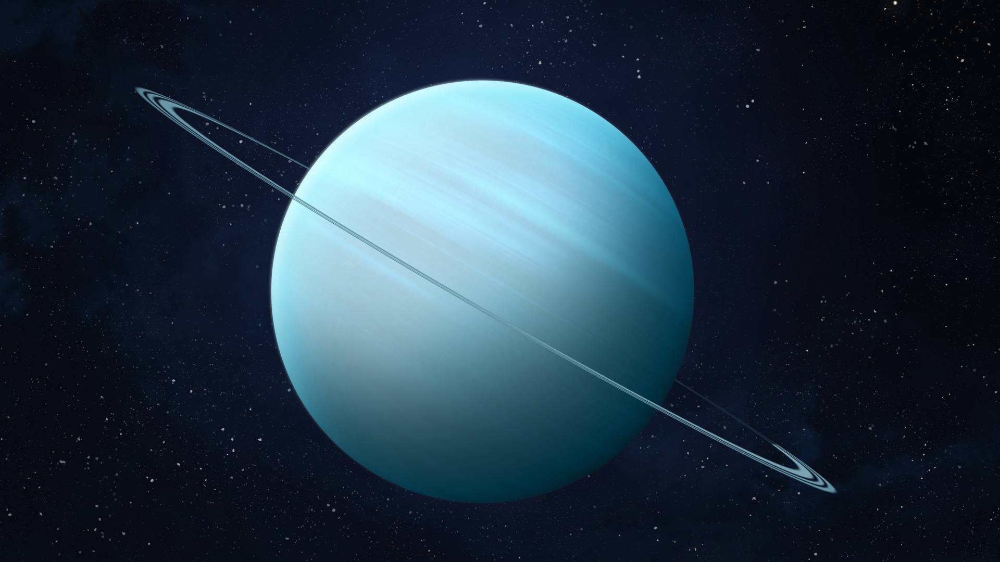

Uranus is the seventh planet from the Sun, and the third largest planet in our solar system. It appears to spin sideways.Uranus is a very cold and windy planet. It is surrounded by faint rings, and more than two dozen small moons as it rotates at a nearly 90-degree angle from the plane of its orbit. This unique tilt makes Uranus appear to spin on its side. Uranus is blue-green in color due to large amounts of methane, which absorbs red light but allows blues to be reflected back into space.Uranus orbits our Sun, a star, and is the seventh planet from the Sun at a distance of about 1.8 billion miles (2.9 billion kilometers).
